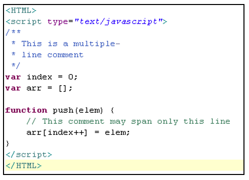
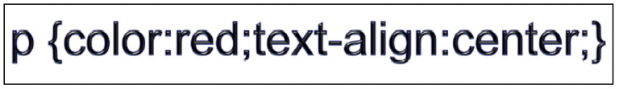
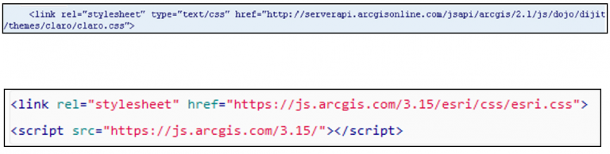
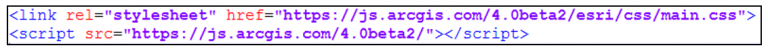
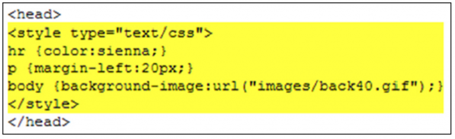
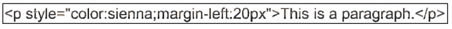

¿Cómo integramos los lenguajes HTML, CSS, y JavaScript?
A principio de los años noventa, el lenguaje HTML era el único idioma disponible en la web. Ha cambiado mucho desde entonces. A continuación vamos a distinguir los tres tipos de lenguaje que describimos en este post:
1. El lenguaje HTML (HyperText Markup Language) nos aporta la estructura básica de los sitios, mejorada y modificada por otras tecnologías como CSS y JavaScript que vemos a continuación. Es el lenguaje famoso por sus etiquetas conocido por todos los que se han inmerso en el desarrollo de páginas web.
2. Por otro lado, CSS u Hojas de Estilo en Cascada (Cascading Style Sheets) se utiliza para controlar la presentación, el formato, y el diseño de nuestra aplicación. Gracias a ella podemos dar forma al estilo que queremos que se muestre.
3. JavaScript se utiliza para controlar el comportamiento de los diferentes elementos, esto es, aporta funcionalidad, dinámica, a nuestros elementos.

Muy bien, ya tenemos claro los diferentes conceptos, pero cómo integro yo los tres tipos de lenguajes en mi nuevo visor. El HTML ya vemos que es el lenguaje de etiquetas, ¿pero cómo podemos integrar los estilos CSS en nuestra aplicación?
Pues existen tres formas, pero antes que nada tenemos que tener en cuenta que una regla CSS tiene dos partes fundamentales: un selector (en este ejemplo un elemento HTML “p” representa un párrafo, existen otros tipos de selectores como “id”, “clases”, etc.) y una o más declaraciones (en este caso “color” y “text-align” son las propiedades y “red” y “center” sus valores respectivos). Cada declaración acaba con un punto y coma:

Sabiendo esto vamos a averiguar cómo integrar nuestra hoja de estilo CSS:
1. Hoja de estilos externa:
Una hoja de estilos externa es simplemente un conjunto de reglas CSS que están guardadas en un fichero de texto con extensión .css
Este fichero es entonces enlazado donde queramos aplicar los estilos definidos en él mediante el uso de la etiqueta HTML link. Por ejemplo:

Ojo a la referencia de la nueva versión de la nueva versión de la API Javascript de ESRI 4.x cuyo archivo .css ya no es esri.css sino main.css

2. Hoja de estilos interna:
Todas las reglas CSS están definidas en la etiqueta head y están encerradas en una etiqueta style como se puede ver en el código de ejemplo que se muestra a continuación:

3. Dentro de los elementos HTML:
El último método para definir reglas CSS es dentro de los elementos HTML. Este método no está recomendado porque mezcla los estilos con la presentación y es muy difícil de mantener.

https://www.cursosgis.com/como-integramos-los-lenguajes-html-css-y-javascript/